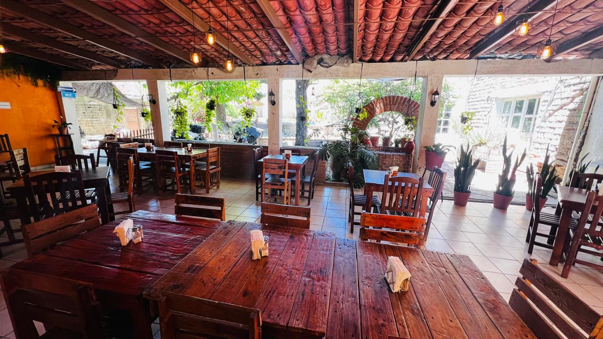

ASADOR · PARRILLA · BUEN AMBIENTE
El sabor de la parrilla en un lugar para disfrutar.
Reservar mesa
NUESTRA ESENCIA
En Los Dos Gallos creemos que una buena comida se disfruta mejor alrededor de una mesa.
Creamos un espacio cálido y familiar donde puedes compartir, disfrutar de la parrilla y pasar un buen momento con quienes más quieres.
CONÓCENOS
VISÍTANOS
12:00 PM — 7:00 PM
ENCUÉNTRANOS
Pedro Salcido #22
Cómo llegarRESERVACIONES
Vive la experiencia de Los Dos Gallos.